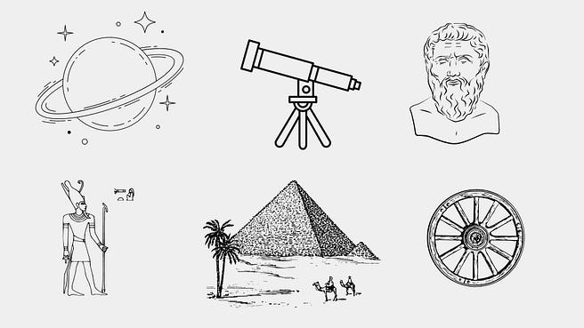

الذكاء الاصطناعي في العلوم
يقود الذكاء الاصطناعي بالفعل العديد من الاكتشافات العلمية والتطورات الجديدة في مجالات العلوم والهندسة والبحث والتطوير، ويستخدم في تطبيقات الحياة اليومية أيضًا. ورغم أننا في بداية نمو هذا المجال، إلا أن هناك دلائل ملموسة على قدرة الذكاء الاصطناعي على اكتشاف القوانين العلمية وحل المشاكل وهناك العديد من التجارب الناجحة. ومع استمرار التطور التكنولوجي وتحسن قدرات الذكاء الاصطناعي، من المتوقع أن يلعب دورًا أكبر في الاكتشافات العلمية والتطورات المستقبلية في مجالات عديدة. دعنا ناخذ لمحة عما كان يحدث في الماضي: .

العلم التجريبي والتمثيل الرياضي قبل ظهور الذكاء الاصطناعي، كانت المنهجية العلمية تعتمد بشكل رئيسي على العلم التجريبي المُشاهد بالعين المجردة. مع تطور الرياضيات والمعادلات، بدأن نستخدم النماذج الرياضية هذا يعني أن العلماء كانوا يقومون بتصميم تجارب لاختبار فرضياتهم حول كيفية عمل العالم الطبيعي. وكانوا يحللون النتائج والبيانات التي أنتجوها من هذه التجارب باستخدام المعادلات الرياضية المجردة. كان هذا المنهج يعتمد بشكل كبير على الخبرة السابقة والمعرفة البشرية ذات الكفاءة.
المحاكاة الحاسوبية للتجارب العلمية مع ظهور الحاسوب والحاجة للحسابات المعقدة، أصبحت المحاكاة الحاسوبية جزءًا أساسيًا ومفيدًا في النمذجة الرياضية للعديد من الأنظمة الطبيعية في مجالات متعددة مثل الفيزياء، الفيزياء الفلكية، الكيمياء، البيولوجيا، الاقتصاد وغيرها.
ومن أمثلة تحقيق الإنجازات العلمية باستخدام المحاكاة الحاسوبية، تم منح جائزة نوبل للكيمياء في عام 2013 لمارتين كاربلوس وأريه وارشيل عن جهودهما في هذا المجال، حيث ساهمت المحاكاة في فهم العديد من الأنظمة الكيميائية شديدة التعقيد. تتمتع المحاكاة بتقدير كبير في الاكتشافات العلمية، حيث توفر رؤى إضافية غالبًا ما تكون غير عملية أو من المستحيل اكتشافها من خلال التحليل التجريبي والنظري في العالم الحقيقي وحده. وتعمل النمذجة والمحاكاة على استكمال وإعلام الذراعين التجريبي والنظري للطريقة العلمية، مما يجعلها أداة مهمة في تحقيق الإنجازات العلمية وحل المشاكل في مختلف المجالات.